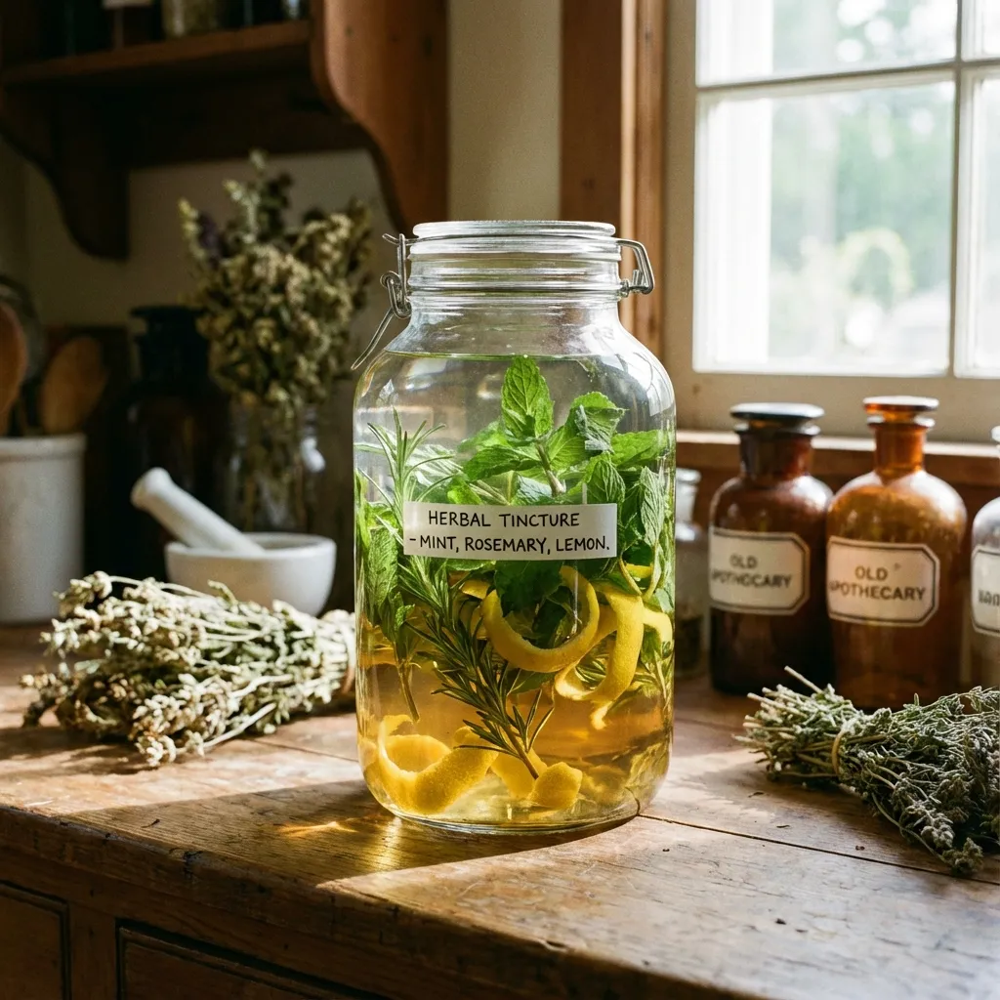

Orujo de Hierbas: Digestivo Tradicional
El orujo de hierbas casero es un digestivo tradicional español elaborado con aguardiente de orujo y una mezcla aromática de hierbas medicinales. Este licor funcional, utilizado durante siglos en la medicina popular española, combina propiedades digestivas, carminativas y hepatoprotectoras. Esta receta casera te permite controlar la calidad de ingredientes y crear un digestivo natural sin azúcares añadidos ni conservantes.

📊 Datos Generales
⏱️ Tiempo de Preparación: 15 minutos
🔥 Maceración: 15 días (reposo)
⏰ Total: 30 minutos (+ 15 días maceración)
🍽️ Porciones: 4 personas (copas de 30ml)
📈 Calorías: 220 kcal por porción | Proteína 15g | Carbohidratos 18g | Grasas saludables 10g
🌿 Ingredientes
- 500ml de aguardiente de orujo blanco (40-45% alcohol)
- 3 ramas de hierba luisa (verbena) seca
- 2 ramas de menta fresca o seca
- 1 rama de romero fresco
- 5-6 hojas de salvia fresca
- 1 rama pequeña de tomillo
- 3 hojas de laurel
- Cáscara de ½ limón orgánico (solo la parte amarilla, sin lo blanco)
- 1 rama de canela Ceylon
- 3 granos de anís estrellado
- 2-3 cucharadas de miel cruda (opcional, para endulzar al final)

👨🍳 Preparación Paso a Paso
- Preparar las hierbas: Lava cuidadosamente todas las hierbas frescas bajo agua fría. Sécalas completamente con papel de cocina. Es crucial eliminar toda humedad para evitar que el licor se enturbie. Corta las hierbas en trozos más pequeños para liberar mejor sus aceites esenciales.
- Preparar los cítricos: Con un pelador de vegetales, retira la cáscara del limón en tiras largas, asegurándote de NO incluir la parte blanca (albedo) que aporta amargor. Solo queremos la capa amarilla aromática rica en aceites esenciales.
- Combinar en el frasco: En un frasco de vidrio grande de 1 litro con cierre hermético, coloca todas las hierbas preparadas, especias (canela, anís) y cáscara de limón.
- Añadir el aguardiente: Vierte los 500ml de orujo blanco sobre las hierbas. Asegúrate de que todas queden completamente sumergidas en el líquido. Cierra herméticamente el frasco.
- Macerar: Guarda el frasco en un lugar fresco, oscuro y seco (despensa, armario) durante 15 días. Agita suavemente el frasco cada 2-3 días para redistribuir las hierbas y favorecer la extracción de compuestos aromáticos.
- Filtrar: Después de 15 días, cuela el licor usando un colador de malla fina forrado con una gasa o filtro de café. Presiona suavemente las hierbas para extraer todo el líquido impregnado.
- Endulzar (opcional): Si prefieres un orujo menos seco, calienta ligeramente 2-3 cucharadas de miel cruda (no hiervas) y mézclala con un poco del orujo filtrado hasta disolver. Incorpora esta mezcla al resto del licor. Mezcla bien.
- Embotellar y reposar: Transfiere el orujo de hierbas a botellas de vidrio oscuro esterilizadas. Deja reposar 3-5 días adicionales antes de consumir para que los sabores se integren completamente.
- Conservar: Guarda en lugar fresco y oscuro. El orujo de hierbas se conserva hasta 12 meses gracias al alto contenido alcohólico que actúa como conservante natural.
💪 Información Nutricional Destacada
El orujo de hierbas ofrece beneficios digestivos y medicinales tradicionales:
- Propiedades digestivas: La combinación de hierba luisa, menta y anís estimula la secreción de jugos gástricos, mejora la digestión de grasas y reduce la sensación de pesadez post-prandial
- Efecto carminativo: El anís estrellado, menta y hierba luisa reducen la formación de gases intestinales, alivian la hinchazón abdominal y calman cólicos digestivos
- Hepatoprotector natural: El romero y la salvia contienen compuestos (ácido rosmarínico, carnosol) que protegen el hígado del estrés oxidativo y apoyan la desintoxicación hepática
- Antiinflamatorio: Las hierbas aromáticas aportan polifenoles y flavonoides con propiedades antiinflamatorias que calman la mucosa digestiva irritada
- Aceites esenciales terapéuticos: Mentol (menta), limoneno (cáscara limón), anetol (anís) con efectos antiespasmódicos que relajan la musculatura lisa intestinal
- Antioxidantes potentes: El romero, salvia y tomillo son ricos en antioxidantes que combaten radicales libres y protegen células del daño oxidativo
- Mejora del apetito: El consumo moderado antes de comidas (aperitivo) estimula el apetito mediante la activación de receptores amargos en boca
- Propiedades antimicrobianas: El alcohol combinado con aceites esenciales de las hierbas tiene efectos antimicrobianos naturales sobre bacterias patógenas
✨ Tips y Variaciones
- Momento ideal de consumo: Bebe una copita pequeña (20-30ml) DESPUÉS de comidas copiosas o grasas para facilitar la digestión. Servir a temperatura ambiente o ligeramente frío
- Versión medicinal concentrada: Aumenta la cantidad de hierbas aromáticas al doble para un orujo más intenso y con mayores propiedades digestivas
- Variantes regionales: Añade 3-4 granos de café verde, nuez moscada rallada o semillas de hinojo para perfiles más complejos típicos de diferentes regiones españolas
- Sin alcohol (versión "mocktail"): Para una versión sin alcohol, macera las hierbas en vinagre de manzana durante 7 días, filtra y diluye 1:3 con agua con gas. Añade miel al gusto
- Orujo cremoso: Después de filtrar, añade 100ml de nata líquida y 3 cucharadas de leche condensada para crear un "orujo crema" estilo licor de hierbas cremoso
- Control de amargor: Si el orujo queda muy amargo, reduce el tiempo de maceración a 10-12 días o elimina la salvia y laurel que aportan mayor amargor
- Calidad del alcohol: Usa siempre aguardiente de orujo de calidad (no alcohol de farmacia). El orujo gallego o asturiano tradicional ofrece mejor sabor base
- Hierbas orgánicas: Prioriza hierbas orgánicas sin pesticidas, especialmente si las cultivas en tu jardín. Las hierbas frescas dan mejor aroma que las secas comerciales
- Dosificación recomendada: Máximo 30ml al día como digestivo. NO excedas esta cantidad. El consumo debe ser ocasional, no diario
- Precauciones: Contraindicado en embarazo, lactancia, menores de 18 años, personas con problemas hepáticos o alcoholismo. Consulta con médico si tomas medicamentos
- Como aperitivo digestivo: Sirve en copa pequeña de licor, acompañado de chocolates con almendras oscuro o frutos secos para una sobremesa tradicional
Este orujo de hierbas casero captura la esencia de la medicina tradicional española, ofreciendo una alternativa natural y artesanal a los digestivos comerciales cargados de azúcares y aditivos. Su preparación es un ritual que conecta con siglos de sabiduría popular sobre el poder curativo de las plantas aromáticas mediterráneas.
💚 Encuentra Ingredientes para Orujo de Hierbas en Amazon
Descubre aguardiente de orujo gallego de calidad, hierbas aromáticas secas orgánicas y botellas de vidrio oscuro para preparar tu digestivo casero.
Ver Productos en Amazon →